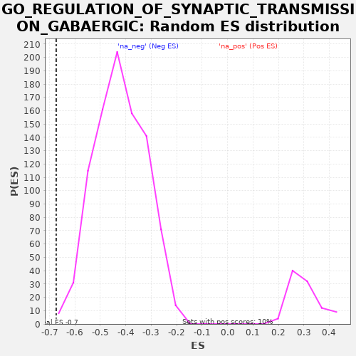

| | | Dataset | PRAD |
| Phenotype | NoPhenotypeAvailable |
| Upregulated in class | na_neg |
| GeneSet | GO_REGULATION_OF_SYNAPTIC_TRANSMISSION_GABAERGIC |
| Enrichment Score (ES) | -0.6736472 |
| Normalized Enrichment Score (NES) | -1.5967366 |
| Nominal p-value | 0.0022148394 |
| FDR q-value | 0.034481958 |
| FWER p-Value | 0.969 |
Table: GSEA Results Summary
 Fig 1: Enrichment plot: GO_REGULATION_OF_SYNAPTIC_TRANSMISSION_GABAERGIC
Fig 1: Enrichment plot: GO_REGULATION_OF_SYNAPTIC_TRANSMISSION_GABAERGIC
Profile of the Running ES Score & Positions of GeneSet Members on the Rank Ordered List
| PROBE | GENE SYMBOL | GENE_TITLE | RANK IN GENE LIST | RANK METRIC SCORE | RUNNING ES | CORE ENRICHMENT | | 1 | CA7 | | | 8049 | 0.921 | -0.2860 | No |
| 2 | KIF5B | | | 8127 | 0.870 | -0.2878 | No |
| 3 | BAIAP3 | | | 8464 | 0.614 | -0.2991 | No |
| 4 | KRAS | | | 8717 | 0.462 | -0.3075 | No |
| 5 | USP46 | | | 8729 | 0.456 | -0.3074 | No |
| 6 | TAC1 | | | 11126 | -0.708 | -0.3921 | No |
| 7 | OXTR | | | 13354 | -3.463 | -0.4677 | No |
| 8 | CA2 | | | 13883 | -4.349 | -0.4817 | No |
| 9 | NF1 | | | 14590 | -5.726 | -0.5006 | No |
| 10 | NLGN1 | | | 16201 | -9.321 | -0.5478 | No |
| 11 | PTEN | | | 16499 | -10.057 | -0.5473 | No |
| 12 | CNTNAP4 | | | 16597 | -10.312 | -0.5395 | No |
| 13 | SYN3 | | | 20361 | -22.020 | -0.6495 | Yes |
| 14 | PLCL1 | | | 20410 | -22.215 | -0.6268 | Yes |
| 15 | STXBP1 | | | 20521 | -22.654 | -0.6058 | Yes |
| 16 | ADORA1 | | | 20721 | -23.294 | -0.5874 | Yes |
| 17 | NPY5R | | | 21223 | -25.373 | -0.5774 | Yes |
| 18 | PRKCE | | | 22637 | -31.674 | -0.5930 | Yes |
| 19 | PHF24 | | | 22847 | -32.863 | -0.5644 | Yes |
| 20 | HTR1B | | | 24077 | -39.695 | -0.5646 | Yes |
| 21 | ADRA1A | | | 24233 | -40.821 | -0.5253 | Yes |
| 22 | ADORA2A | | | 24603 | -43.187 | -0.4910 | Yes |
| 23 | PLCL2 | | | 25459 | -49.613 | -0.4671 | Yes |
| 24 | DRD2 | | | 25568 | -50.510 | -0.4155 | Yes |
| 25 | CNR1 | | | 27225 | -69.770 | -0.3979 | Yes |
| 26 | HAP1 | | | 27281 | -70.650 | -0.3223 | Yes |
| 27 | NISCH | | | 27330 | -71.478 | -0.2455 | Yes |
| 28 | NLGN2 | | | 27647 | -80.090 | -0.1689 | Yes |
| 29 | NPAS4 | | | 27721 | -82.750 | -0.0806 | Yes |
| 30 | SLC6A1 | | | 27776 | -84.943 | 0.0107 | Yes |
Table: GSEA details [plain text format]

Fig 2: GO_REGULATION_OF_SYNAPTIC_TRANSMISSION_GABAERGIC: Random ES distribution
Gene set null distribution of ES for GO_REGULATION_OF_SYNAPTIC_TRANSMISSION_GABAERGIC